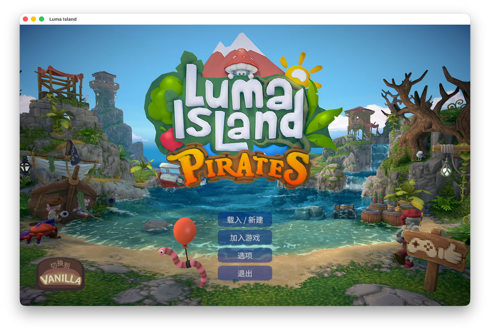

即使想在 Steam 上玩的遊戲有 Windows 版但沒有 Mac 版的情況並不少見。因此，我試著利用 Sikarugir 在 Mac 上執行 Windows 版的遊戲。
※ Mac 版 Steam 已安裝且 Steam 帳號已建立。
先安裝：
自己的情況下，我透過下述方法成功啟動了 Luma Island
在「應用程式資料夾」中雙擊「Sikarugir Creator.app」，
點選「+」下載「WS12WineCX24.0.7_6」引擎

點選「Create New Blank Wrapper」

安裝成功後在 User 的 Applications 檔案夾找到 app 開啟
/Users/{user_name}/Applications/Sikarugir/SteamWindows.app
點選 Winetricks ，勾選

- apps
- steam
- dlls
- d3dx11_42
- d3dx11_43
- fonts
- fakechinese
點選 Run，等待安裝完成
點選 Windows app 後面的 Broswe 找到 Steam.exe

在路徑後面新增
-udpforce -allosarches -cef-force-32bit
最後大概是這個樣子
"C:\Program Files (x86)\Steam\Steam.exe" -udpforce -allosarches -cef-force-32bit
點選 「Test Run」啟動。
啟動測試了一下 Luma Island
